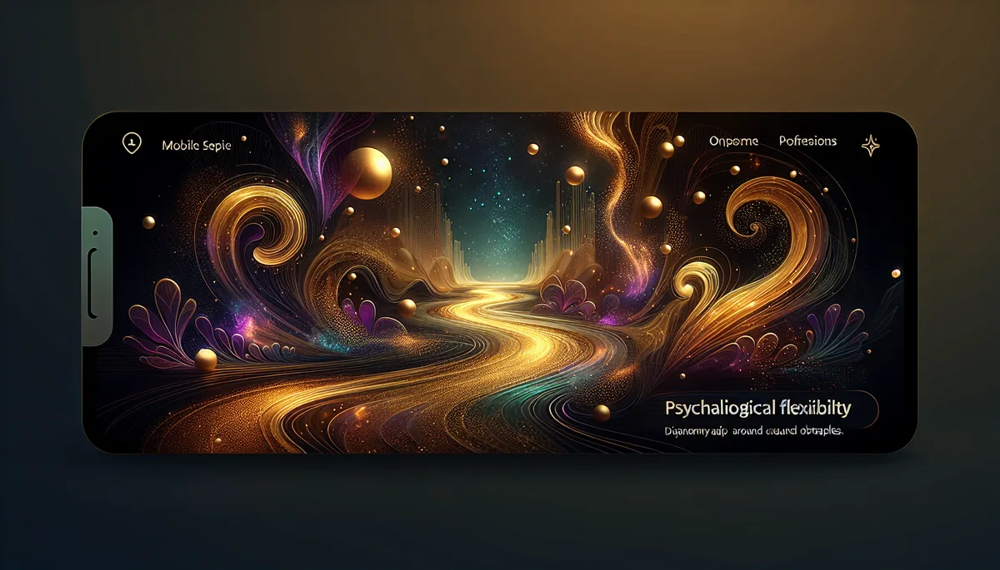

PSYCHOLOGICAL FLEXIBILITY
🌊
风暴來了，您还能走嗎？
恆毅力是油门，心理弹性是避震器。情緒不舒服的時候，您是繼續走，还是等它过去？
15 题，测出您的心理弹性类型。
🔮 15 题 · 约 4 分鐘 · 5 種弹性类型 · 免费
第 1 题
0%
面对风暴 🌊
📥 儲存图片
🧵 分享到 Threads
📋 複製結果
💬 分享到 LINE
想更深入了解自己？
加入馥灵之钥 LINE 官方帳号，获得专属觉察指引 ✨
💬 加入 LINE 好友
🔄 重新测一次
✨ 更多觉察测验
🔥
恆毅力
🤲
自我慈悲
🎯
內外控信念
🌸
身体觉察力